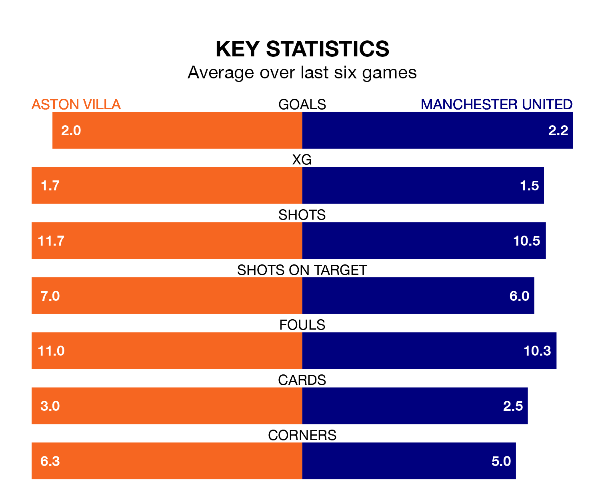

Aston Villa host Manchester United on Sunday at Villa Park in the Premier League.
In their last league match, on February 3, Villa beat Sheffield United 5-0 away, with goals from John McGinn, Leon Bailey, Ollie Watkins, Youri Tielemans and Álex Moreno.
United also won, 3-0 at home against West Ham United on February 4, with Alejandro Garnacho (two) and Rasmus Højlund on the scoresheet.
With 49 goals in 23 games so far this season, Villa are the league's joint-third-highest scorers with 2.1 goals per game. And they are conceding fewer than average, letting in 30 goals at a rate of 1.3 per game.
United, meanwhile, are below average scorers, with 1.3 goals per game, compared to a league average of 1.6. They have conceded 1.4 goals per game.
In André Onana, the Red Devils can rely on one of the league's safest pair of hands. He has kept seven clean sheets in his 23 appearances this season, and only one other 'keeper – Everton's Jordan Pickford – has been able to prevent the opposition scoring on more occasions in the Premier League.
In the Villa's net, Emiliano Martínez has six clean sheets in 22 games.
In the last 10 years, Villa and United have played each other on 17 occasions. Villa won two of them, United 11, and they drew four times.
On average, the Villa scored 1.1 goals and the Red Devils 2.0 in those matches.
Their last meeting was on December 26, when United won 3-2 at home.
The home side are fourth in the table after 23 games, of which they have won 14 and drawn four, earning 46 points.
The visitors are two places behind Villa in sixth, with 12 wins and two draws putting them on 38 points.
Villa are in mixed form in the Premier League, with two wins and two draws from their last six games.
With three wins and a draw over that period, United's form is slightly better – they have taken 10 points from 18, compared to the Villa's eight.
Updated: 10:01 (UTC), 06/02/24